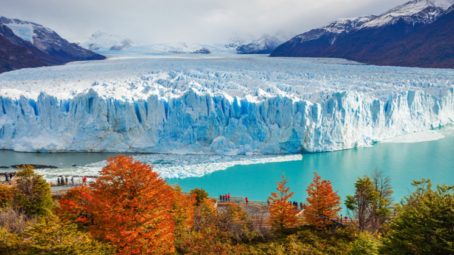
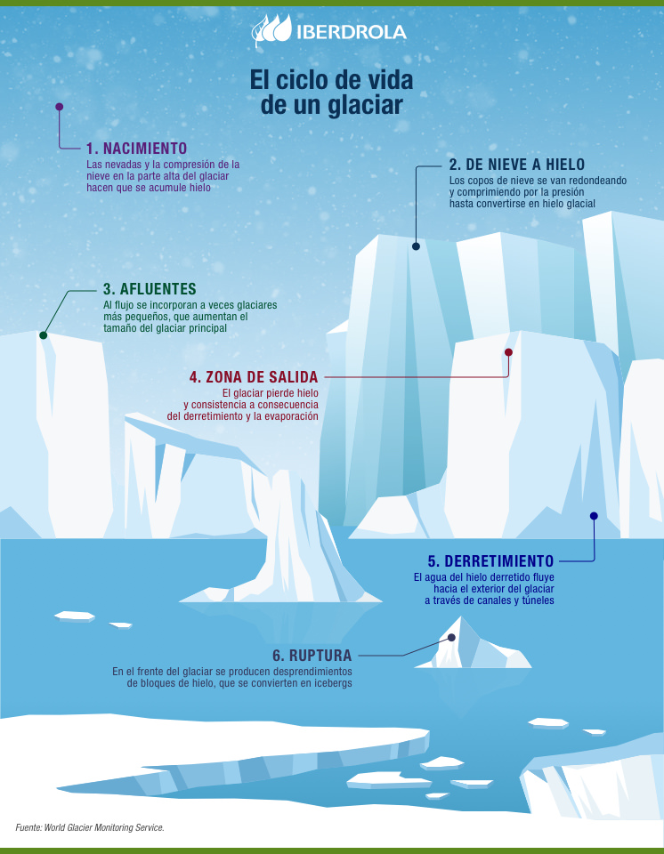

El derretimiento de los glaciares, fenómeno que se acentuó durante el siglo XX, nos está dejando un planeta sin hielo. La actividad humana es la mayor culpable con la emisión de dióxido de carbono y otros gases responsables del calentamiento terrestre. El nivel del mar y la estabilidad global dependen de la evolución de estas grandes masas de nieve recristalizada.
Estas grandes masas de hielo en movimiento se originan al compactarse y recristalizarse la nieve acumulada en lugares fríos, como es el caso, por ejemplo, de los glaciares de montaña y los glaciares polares, que no debemos confundir con las gigantescas placas del Ártico. Los glaciares se clasifican según su morfología campo de hielo, glaciar de circo, glaciar de valle, etc, el clima polar, tropical o templado o la condición térmica base fría, caliente o politermal.
La formación de un glaciar es un proceso milenario y su tamaño oscilará según la cantidad de hielo que logre retener a lo largo de su vida. El comportamiento de estas masas recuerda mucho al de los ríos, a los que alimentan durante los deshielos, y su velocidad depende de la fricción y la pendiente del terreno por el que avanzan. En total, los glaciares cubren el 10 % de la superficie terrestre y, junto a las capas de hielo, suman casi el 70 % del agua dulce del planeta.
El aumento de la temperatura terrestre ha sido, sin duda, el responsable del derretimiento de los glaciares a lo largo de la historia. Hoy la rapidez con la que avanza el cambio climático podría extinguirlos en un tiempo récord. Veamos, en detalle, las causas del deshielo glaciar:
Emisiones de CO2: la concentración atmosférica de dióxido de carbono y otros gases de efecto invernadero derivados de la industria, el transporte, la deforestación o la quema de combustibles fósiles, entre otras actividades del ser humano, hace que el planeta se recaliente y se fundan los glaciares.
Calentamiento oceánico: los océanos absorben el 90 % del calor terrestre, un hecho que afecta al derretimiento de los glaciares marinos ubicados, sobre todo, en las zonas polares y en las costas de Alaska (Estados Unidos).
